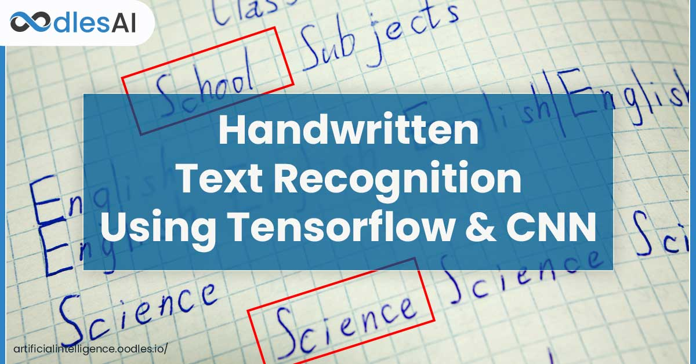

Pre-processing, verifying for ANOVA test assumptions, and determining which group of the variant feature contributes to each session's page visit are all carried out.
The difference in statistical significance between the independent and dependent variables was investigated.
Insights gathered from previous procedures, such as which variables influence the dependent variable.

The data analytics involved in a customer's multiple interactions with the Education website are the focus of this project. Based on previous events and interactions, forecast whether a specific customer is likely to convert into a long-term customer.
This project refers on how the data is pulled from HTML and XML files using different python libraries.
Worked with IMDB website to extract the data on the popular TV shows. Used Beautiful Soup and requests libraries to extract the data from the website.
The dataset consists of Name of the Popular TV show, Rank of the show, Released Date, Rating.

Exploratory data analysis on the E-commerce dataset is performed to find the relationship between independent and target variables.
This project will create a generalised model that helps predict future sales and the number of
customers on a particular day. We will use Machine learning techniques such as supervised
learning. The user can define the target feature by inputting the target feature name, and the rest of
the features will act as training features. The model will generally take historical sales and the
number of customers as the target features and training features.